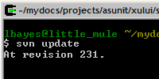

|
  |
 |
| What exactly is AsUnit? | At it's most basic, AsUnit is simply some ActionScript classes that make it easier for you to build and execute automated tests for your applications. This simple, lightweight component is known as the AsUnit framework, and it currently supports ActionScript 2.0 and ActionScript 3.0 development. The AsUnit framework is deployed along with a variety of additional tools that we believe make adding (and maintaining) features much simpler. These tools include:
|
| Who uses it? | Everyone from one-person shops all the way up to companies like Yahoo! are using AsUnit every day. At the time of this writing (March 2006), AsUnit has been downloaded almost 7,000 times. |
| Do I need anything else? | Yes, you will need:
|
| Get Started | Please read each of the following items as you may want to download more than one depending on your system configuration and project needs. |
 
You use a simple text editor and compiler. You know what a class path is and you don't want to be bothered with all the fluff. You are running on Windows, Mac, or *nix. |
 
You use Eclipse or some other IDE, you want help building classes, test cases and test suites. You are writing ActionScript 2.0 or 3.0. You are running Windows. |
You use Flash Authoring. You write ActionScript 2.0. You want to get up and running quickly. You are running on Windows or Macintosh |
| *This installer includes the framework | *This installer includes the framework | |
| *OSX users can grab this build (Generously contributed by Aral Balkan) |
| Get Involved |
AsUnit was first released in March of 2004 by Luke Bayes and Ali Mills of Pattern Park. Since then, many people have contributed to the project and you can be one of them. One of the simplest and most helpful ways you can get involved is by joining our mailing list and asking questions about things that seem unclear. Your questions help us figure out what to focus on next. If you're interested in contributing some real time to the project, please check out the to-do lists and writeboards at our basecamp site. Username: anonymous |
| Get More Involved | If you are interested in becoming a more serious contributor, please feel free to start browsing the Subversion repository or checking out the sources directly. If you're going to pull down the source code, be aware that it's pretty large. You would probably do well to grab only the module or folders that interest you.
Once you get the appropriate sources down to your disk, please make sure you're up to date with the head revision before you begin making modifications. You can then easily make the changes you want, and when you're done - create a patch file directly from subversion. You can then easily send us your patch file in order to simplify our integration process. If you find yourself sending us patches more than once or twice, we will likely promote you to developer on the project and just get you write access to SVN. Any contributions will be greatly appreciated! |
| Contributors | We would like to give the following contributors special recognition for their efforts: |
| Learn More |
Check out the following resources to learn more about AsUnit in particular and unit testing in general.
|
We recognize that this section is in desparate need of more current content, if you are interested in contributing some instructional material, please contact us to discuss.